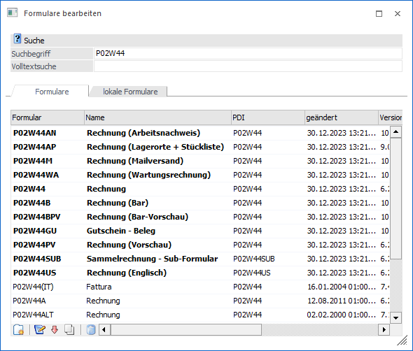

In diesem Fenster, welches auch über den Menüpunkt
1 WinLine START
1 Parameter
1 Formulare bearbeiten
aufgerufen werden kann, kann nach allen Formularen, die in der WinLine verwendet werden, gesucht werden.

Im ersten Feld kann ein Suchbegriff eingegeben werden, wobei entweder nach dem Namen des Formulars oder nach der Bezeichnung des Formulars gesucht werden kann.
Alle Formulare der WinLine haben einen eindeutigen Namen, der sich wie folgt zusammensetzt:
Die erste Stelle ist immer ein P (steht für Programm).
Die zweite und dritte Stelle beinhaltet den Programmcode. Nachfolgend eine Aufstellung aller Programme mit ihren Programmcodes:
|
Code |
Programm |
|
00 |
WinLine START |
|
01 |
WinLine FIBU |
|
02 |
WinLine FAKT |
|
03 |
WinLine LOHN - Österreich |
|
04 |
WinLine LIST |
|
05 |
WinLine KORE |
|
06 |
WinLine ANBU |
|
08 |
WinLine ARCHIV |
|
09 |
WinLine EXIM |
|
11 |
WinLine INFO |
|
18 |
WinLine LOHN - Deutschland |
|
20 |
WinLine PROD |
|
99 |
Allgemein |
Die dritte Stelle ist immer ein W (steht für Window).
Die weiteren Stellen stehen für das Fenster, aus dem das Formular aufgerufen wird.
Nach diesem System kann auch die Anzahl der angezeigten Formulare eingeschränkt werden.
Beispiele
|
Einschränkung |
Auswirkung |
|
|
Bringt alle Formulare |
|
P01W |
Bringt alle Formulare der WinLine FIBU |
|
P02W |
Bringt alle Formulare der WinLine FAKT |
|
P02W4 |
Bringt alle Formulare des Bestellwesens |
|
P02W44 |
Bringt alle Fakturenformulare |
Üblicherweise ist der Ausdruck am Bildschirm und Drucker identisch. In einigen Fällen - vor allem in der Belegbearbeitung - sind zwei Listbilder vorgesehen. Am Namen des Formulars ist dann erkennbar, ob es sich um ein Formular für den Ausdruck oder für die Voransicht handelt.
Beispiel
ü P02W44
Listbild für die
Debitoren-Faktura
ü P02W44PV
Listbild für
die Voransicht (Preview) der Debitoren-Faktura
Durch Doppelklick auf das gewünschte Formular oder durch Anklicken des Bearbeiten-Buttons wird dieses zur Bearbeitung übernommen.
Handelt es sich bei dem Formular um ein bereits einmal verändertes Formular, so wird dieses in der Tabelle mit fetter Schrift dargestellt - damit kann gleich erkannt werden, dass das Formular bereits einmal geändert wurde. Sind diese Änderungen nicht mehr erwünscht (das Formular wurde so geändert, dass kein sinnvoller Ausdruck mehr möglich ist), so kann durch das Anklicken des Löschen-Buttons der Originalzustand des Formulars wiederhergestellt werden. Der Löschen-Button kann auch nur bei geänderten Formularen aktiviert werden.